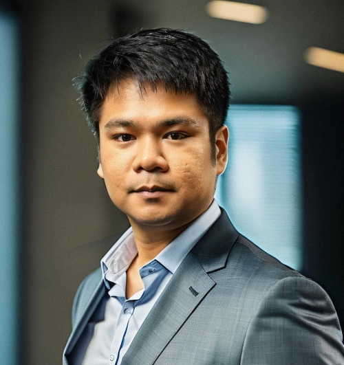

<div class="row text-white">
  <div class="col-12 main-content">
    <div class="col-md-8 text-center text-md-start mx-auto">
      <div class="profile-section text-center">
        
        <h1>Brad Mike Burzon</h1>
        <p class="headline">Junior Software Engineer at <a href="https://sumup.com" style="text-decoration: none;"
            target="_blank">SumUp</a>
        </p>
      </div>
      <!-- <div class="social-media-section text-center">
              <h2>Connect With Me</h2>
              <a href="https://www.linkedin.com/in/brad-burzon/" target="_blank">
                <i class="fab fa-linkedin" style="color: #fff"></i>
              </a>
              <a href="https://github.com/bradburzon?tab=overview&from=2024-03-01&to=2024-03-12" target="_blank">
                <i class="fab fa-github" style="color: #fff"></i>
              </a>
            </div> -->

      <div class="about-me mb-5">
        <h2>👋 Greetings!</h2>
        <p>
          Hello, I'm <strong>Brad Mike</strong>, a spirited software engineer
          freshly graduated from Purdue University Fort Wayne with a Bachelor's
          in Computer Science. My academic voyage was an exhilarating mix of
          coding marathons, project deadlines, and those brilliant "aha!"
          moments when all the pieces of a puzzle fit perfectly together.
        </p>
        <!-- <br />
                <h3>🛠️ Tech Toolkit:</h3>
                <p>
                  My tech arsenal is diverse, spanning across languages like
                  <strong>Java, JavaScript, TypeScript</strong>, and more. I'm
                  proficient in front-end technologies including
                  <strong>Angular and Bootstrap</strong>, and back-end solutions such as
                  <strong>Node.js, MongoDB, and Firebase</strong>. Not to mention, my
                  expertise in testing and debugging, agile methodologies, and a
                  plethora of tools and technologies from
                  <strong>Docker to Figma</strong>.
                </p> -->
        <br />
        <h3>💡 What's really important to me?</h3>
        <ul>
          <li>
            <strong>Continuous Learning:</strong> I'm always ready to dive deep
            into new technologies and methodologies.
          </li>
          <li>
            <strong>Team Collaboration:</strong> Collaborating with diverse
            teams and embracing constructive criticism fuels my passion for
            excellence.
          </li>
          <li>
            <strong>People Satisfaction:</strong> Ensuring satisfaction in the
            teams and individuals I work with is a priority.
          </li>
          <li>
            <strong>Delivering Results:</strong> I live to transform ideas into
            tangible solutions that simplify life.
          </li>
          <li>
            <strong>Impactful Work:</strong> Engaging in projects that have a
            meaningful and positive impact on society drives me.
          </li>
          <li>
            <strong>Work-Life Balance:</strong> I believe in the synergy of
            professional achievements and personal well-being.
          </li>
        </ul>
        <br />
        <h3>🌟 Project Spotlight: <strong>Order Flow</strong></h3>
        <p>
          Venturing into the role of a <strong>Full-Stack Developer</strong>, I
          collaborated with a local restaurant to enhance order management
          system leveraging Angular frontend and Firebase for storage and deployment. This project not only boosted
          order
          efficiency by 80% (from 50 seconds to 10 seconds) but also accurately
          processed over 10,000+ orders, showcasing the power of
          real-time data processing and user-friendly design.
        </p>
        <br />
      </div>
    </div>
  </div>
</div>